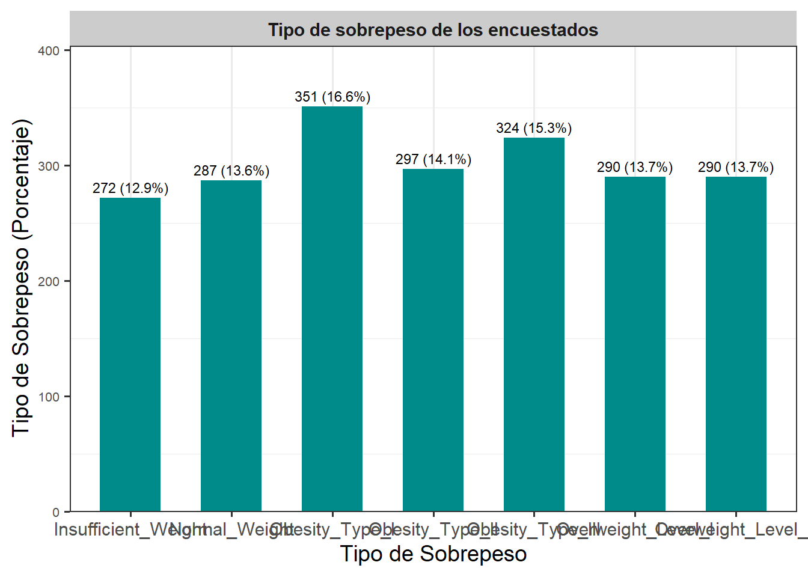
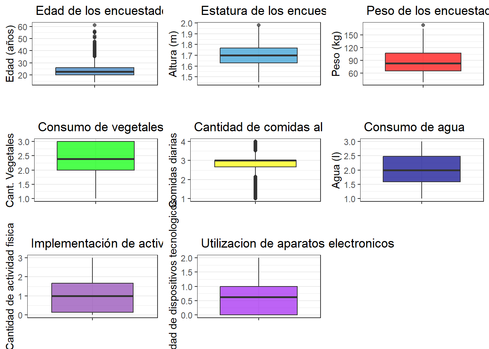
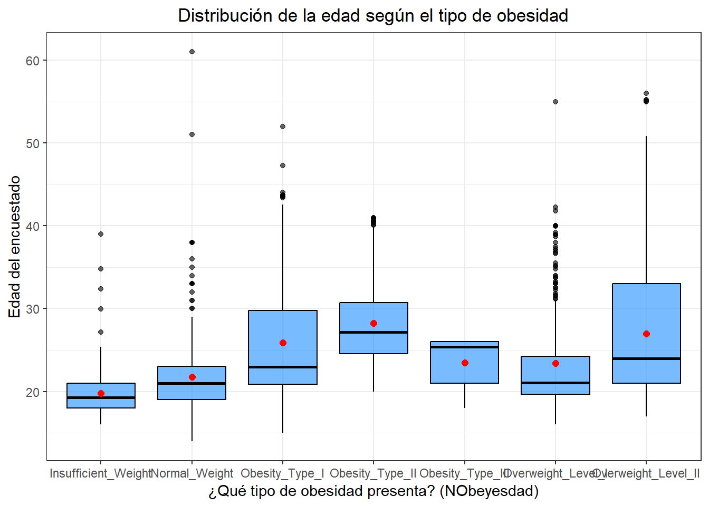
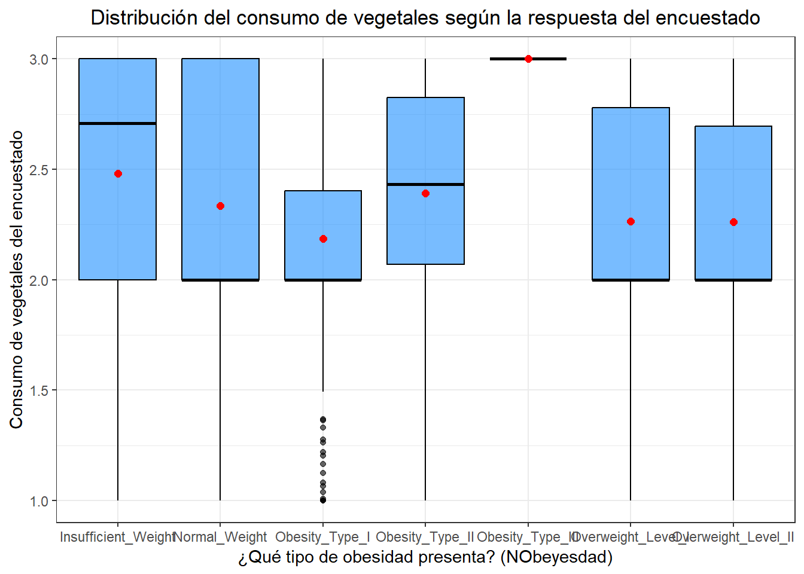
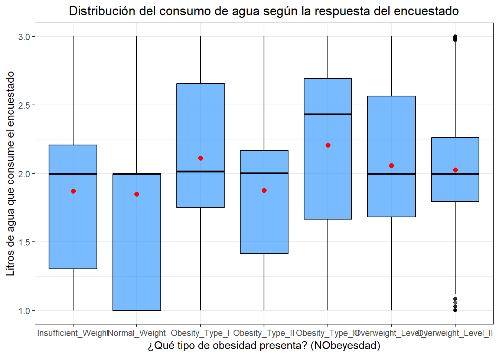

Chapter 3 Análisis Exploratorio de Datos (EDA)
3.1 Extracción, Transformación y Carga (ETL)
En esta sección preparamos la base de datos para el EDA: la cargamos, validamos su estructura, limpiamos variables innecesarias y revisamos si existen valores faltantes.
- Instalar librerías necesarias
- Cargar conjunto de datos
datos <- read_csv("C:/Users/natal/Downloads/estimation+of+obesity+levels+based+on+eating+habits+and+physical+condition/ObesityDataSet_raw_and_data_sinthetic.csv")## Rows: 2111 Columns: 17
## ── Column specification ────────────────────────────────────────
## Delimiter: ","
## chr (9): Gender, family_history_with_overweight, FAVC, CAEC,...
## dbl (8): Age, Height, Weight, FCVC, NCP, CH2O, FAF, TUE
##
## ℹ Use `spec()` to retrieve the full column specification for this data.
## ℹ Specify the column types or set `show_col_types = FALSE` to quiet this message.- Verificamos que se leyeron los datos correctamente (dimensiones, nombres, estructura, encabezado y cola)
## [1] 2111 17## [1] "Gender"
## [2] "Age"
## [3] "Height"
## [4] "Weight"
## [5] "family_history_with_overweight"
## [6] "FAVC"
## [7] "FCVC"
## [8] "NCP"
## [9] "CAEC"
## [10] "SMOKE"
## [11] "CH2O"
## [12] "SCC"
## [13] "FAF"
## [14] "TUE"
## [15] "CALC"
## [16] "MTRANS"
## [17] "NObeyesdad"## spc_tbl_ [2,111 × 17] (S3: spec_tbl_df/tbl_df/tbl/data.frame)
## $ Gender : chr [1:2111] "Female" "Female" "Male" "Male" ...
## $ Age : num [1:2111] 21 21 23 27 22 29 23 22 24 22 ...
## $ Height : num [1:2111] 1.62 1.52 1.8 1.8 1.78 1.62 1.5 1.64 1.78 1.72 ...
## $ Weight : num [1:2111] 64 56 77 87 89.8 53 55 53 64 68 ...
## $ family_history_with_overweight: chr [1:2111] "yes" "yes" "yes" "no" ...
## $ FAVC : chr [1:2111] "no" "no" "no" "no" ...
## $ FCVC : num [1:2111] 2 3 2 3 2 2 3 2 3 2 ...
## $ NCP : num [1:2111] 3 3 3 3 1 3 3 3 3 3 ...
## $ CAEC : chr [1:2111] "Sometimes" "Sometimes" "Sometimes" "Sometimes" ...
## $ SMOKE : chr [1:2111] "no" "yes" "no" "no" ...
## $ CH2O : num [1:2111] 2 3 2 2 2 2 2 2 2 2 ...
## $ SCC : chr [1:2111] "no" "yes" "no" "no" ...
## $ FAF : num [1:2111] 0 3 2 2 0 0 1 3 1 1 ...
## $ TUE : num [1:2111] 1 0 1 0 0 0 0 0 1 1 ...
## $ CALC : chr [1:2111] "no" "Sometimes" "Frequently" "Frequently" ...
## $ MTRANS : chr [1:2111] "Public_Transportation" "Public_Transportation" "Public_Transportation" "Walking" ...
## $ NObeyesdad : chr [1:2111] "Normal_Weight" "Normal_Weight" "Normal_Weight" "Overweight_Level_I" ...
## - attr(*, "spec")=
## .. cols(
## .. Gender = col_character(),
## .. Age = col_double(),
## .. Height = col_double(),
## .. Weight = col_double(),
## .. family_history_with_overweight = col_character(),
## .. FAVC = col_character(),
## .. FCVC = col_double(),
## .. NCP = col_double(),
## .. CAEC = col_character(),
## .. SMOKE = col_character(),
## .. CH2O = col_double(),
## .. SCC = col_character(),
## .. FAF = col_double(),
## .. TUE = col_double(),
## .. CALC = col_character(),
## .. MTRANS = col_character(),
## .. NObeyesdad = col_character()
## .. )
## - attr(*, "problems")=<externalptr>## # A tibble: 5 × 17
## Gender Age Height Weight family_history_with_o…¹ FAVC FCVC
## <chr> <dbl> <dbl> <dbl> <chr> <chr> <dbl>
## 1 Female 21 1.62 64 yes no 2
## 2 Female 21 1.52 56 yes no 3
## 3 Male 23 1.8 77 yes no 2
## 4 Male 27 1.8 87 no no 3
## 5 Male 22 1.78 89.8 no no 2
## # ℹ abbreviated name: ¹family_history_with_overweight
## # ℹ 10 more variables: NCP <dbl>, CAEC <chr>, SMOKE <chr>,
## # CH2O <dbl>, SCC <chr>, FAF <dbl>, TUE <dbl>, CALC <chr>,
## # MTRANS <chr>, NObeyesdad <chr>- verificamos que no existan valores faltantes en el dataset.
## Warning: Unknown or uninitialised column: `arguments`.
## Unknown or uninitialised column: `arguments`.## Warning: Unknown or uninitialised column: `imputations`. Como podemos notar en la gráfica, ninguna de las 17 valiables del dataset tiene valores faltantes.
Como podemos notar en la gráfica, ninguna de las 17 valiables del dataset tiene valores faltantes.
3.2 Análisis variable objetivo (NObeyesdad)
- Consideremos el resumen de la variable NObeyesdad
## # A tibble: 7 × 3
## NObeyesdad n Porcentaje
## <chr> <int> <dbl>
## 1 Insufficient_Weight 272 12.9
## 2 Normal_Weight 287 13.6
## 3 Obesity_Type_I 351 16.6
## 4 Obesity_Type_II 297 14.1
## 5 Obesity_Type_III 324 15.3
## 6 Overweight_Level_I 290 13.7
## 7 Overweight_Level_II 290 13.7INTERPRETACIÓN…
- Veamos un diagrama de barras
# Crear tabla de frecuencias para la variable
tabla_NObeyesdad <- datos %>%
count(NObeyesdad, name = "Tipo_de_obesidad") %>%
mutate(Porcentaje = round(Tipo_de_obesidad / sum(Tipo_de_obesidad) * 100, 1),
Etiqueta = paste0(Tipo_de_obesidad, " (", Porcentaje, "%)"))
# Gráfico
tabla_NObeyesdad %>%
ggplot(aes(x = factor(NObeyesdad), y = Tipo_de_obesidad)) +
geom_col(fill = "#008B8B", width = 0.6) +
geom_text(aes(label = Etiqueta), vjust = -0.5, size = 3) +
facet_grid(~ "Tipo de sobrepeso de los encuestados") +
scale_y_continuous(expand = expansion(mult = c(0, 0.15))) +
labs(x = "Tipo de Sobrepeso", y = "Tipo de Sobrepeso (Porcentaje)") +
theme_bw(base_size = 14) +
theme(
plot.title = element_blank(),
strip.background = element_rect(fill = "gray80", color = NA),
strip.text = element_text(face = "bold"),
panel.grid.major.y = element_blank(),
axis.text.y = element_text(size = 8)
)
INTERPRETACIÓN…3.3 Análisis exploratorio univariado de variables independientes numéricas
- Veamos un resumen de cada variable independiente numérica
#variables independientes numéricas----
datos %>%
summarise(
n = length(Age),
media = mean(Age),
ds = sd(Age),
mediana = median(Age),
minimo = min(Age),
maximo = max(Age),
Q1 = quantile(Age, 0.25),
Q3 = quantile(Age, 0.75),
IQR = IQR(Age)) %>%
mutate(variable = "Age") -> var_num_edad
datos %>%
summarise(
n = length(Height),
media = mean(Height),
ds = sd(Height),
mediana = median(Height),
minimo = min(Height),
maximo = max(Height),
Q1 = quantile(Height, 0.25),
Q3 = quantile(Height, 0.75),
IQR = IQR(Height)) %>%
mutate(variable = "Height") -> var_num_est
datos %>%
summarise(
n = length(Weight),
media = mean(Weight),
ds = sd(Weight),
mediana = median(Weight),
minimo = min(Weight),
maximo = max(Weight),
Q1 = quantile(Weight, 0.25),
Q3 = quantile(Weight, 0.75),
IQR = IQR(Weight)) %>%
mutate(variable = "Weight") -> var_num_peso
datos %>%
summarise(
n = length(FCVC),
media = mean(FCVC),
ds = sd(FCVC),
mediana = median(FCVC),
minimo = min(FCVC),
maximo = max(FCVC),
Q1 = quantile(FCVC, 0.25),
Q3 = quantile(FCVC, 0.75),
IQR = IQR(FCVC)) %>%
mutate(variable = "FCVC") -> var_num_evm
datos %>%
summarise(
n = length(NCP),
media = mean(NCP),
ds = sd(NCP),
mediana = median(NCP),
minimo = min(NCP),
maximo = max(NCP),
Q1 = quantile(NCP, 0.25),
Q3 = quantile(NCP, 0.75),
IQR = IQR(NCP)) %>%
mutate(variable = "NCP") -> var_num_meal
datos %>%
summarise(
n = length(CH2O),
media = mean(CH2O),
ds = sd(CH2O),
mediana = median(CH2O),
minimo = min(CH2O),
maximo = max(CH2O),
Q1 = quantile(CH2O, 0.25),
Q3 = quantile(CH2O, 0.75),
IQR = IQR(CH2O)) %>%
mutate(variable = "CH2O") -> var_num_agu
datos %>%
summarise(
n = length(FAF),
media = mean(FAF),
ds = sd(FAF),
mediana = median(FAF),
minimo = min(FAF),
maximo = max(FAF),
Q1 = quantile(FAF, 0.25),
Q3 = quantile(FAF, 0.75),
IQR = IQR(FAF)) %>%
mutate(variable = "FAF") -> var_num_phy
datos %>%
summarise(
n = length(TUE),
media = mean(TUE),
ds = sd(TUE),
mediana = median(TUE),
minimo = min(TUE),
maximo = max(TUE),
Q1 = quantile(TUE, 0.25),
Q3 = quantile(TUE, 0.75),
IQR = IQR(TUE)) %>%
mutate(variable = "TUE") -> var_num_tec
bind_rows(var_num_edad, var_num_est, var_num_peso, var_num_evm, var_num_meal, var_num_agu, var_num_phy, var_num_tec) %>%
select(variable, everything())## # A tibble: 8 × 10
## variable n media ds mediana minimo maximo Q1
## <chr> <int> <dbl> <dbl> <dbl> <dbl> <dbl> <dbl>
## 1 Age 2111 24.3 6.35 22.8 14 61 19.9
## 2 Height 2111 1.70 0.0933 1.70 1.45 1.98 1.63
## 3 Weight 2111 86.6 26.2 83 39 173 65.5
## 4 FCVC 2111 2.42 0.534 2.39 1 3 2
## 5 NCP 2111 2.69 0.778 3 1 4 2.66
## 6 CH2O 2111 2.01 0.613 2 1 3 1.58
## 7 FAF 2111 1.01 0.851 1 0 3 0.125
## 8 TUE 2111 0.658 0.609 0.625 0 2 0
## # ℹ 2 more variables: Q3 <dbl>, IQR <dbl>INTERPRETACIÓN…
- Gráficos de cada variable independiente numérica:
library(patchwork)
library(gridExtra)
# Boxplot de Age
p1 <- datos %>%
ggplot(aes(x="", y = Age)) +
geom_boxplot(fill = "#2f77b9", alpha = 0.7) +
labs(
title = " Edad de los encuestados",
y = "Edad (años)",
x = ""
) +
theme_bw()
# Boxplot de Height
p2 <- datos %>%
ggplot(aes(x="", y = Height)) +
geom_boxplot(fill = "#2c99d1", alpha = 0.7) +
labs(
title = " Estatura de los encuestados",
y = "Altura (m)",
x = ""
) +
theme_bw()
# Boxplot de Weight
p3 <- datos %>%
ggplot(aes(x="", y = Weight)) +
geom_boxplot(fill = "red", alpha = 0.7) +
labs(
title = " Peso de los encuestados",
y = "Peso (kg)",
x = ""
) +
theme_bw()
# Boxplot de FCVC
p4 <- datos %>%
ggplot(aes(x="", y = FCVC)) +
geom_boxplot(fill = "green", alpha = 0.7) +
labs(
title = " Consumo de vegetales",
y = "Cant. Vegetales",
x = ""
) +
theme_bw()
# Boxplot de NCP
p5 <- datos %>%
ggplot(aes(x="", y = NCP)) +
geom_boxplot(fill = "yellow", alpha = 0.7) +
labs(
title = " Cantidad de comidas al día",
y = "Comidas diarias",
x = ""
) +
theme_bw()
# Boxplot de CH2O
p6 <- datos %>%
ggplot(aes(x="", y = CH2O)) +
geom_boxplot(fill = "darkblue", alpha = 0.7) +
labs(
title = " Consumo de agua",
y = "Agua (l)",
x = ""
) +
theme_bw()
# Boxplot de FAF
p7 <- datos %>%
ggplot(aes(x="", y = FAF)) +
geom_boxplot(fill = "#8d42b1", alpha = 0.7) +
labs(
title = " Implementación de actividad fisica ",
y = "Cantidad de actividad fisica",
x = ""
) +
theme_bw()
# Boxplot de TUE
p8 <- datos %>%
ggplot(aes(x="", y = TUE)) +
geom_boxplot(fill = "purple", alpha = 0.7) +
labs(
title = " Utilizacion de aparatos electronicos ",
y = "Cantidad de dispositivos tecnologicos",
x = ""
) +
theme_bw()
#unión de los gráficos
grid.arrange(p1, p2, p3, p4, p5, p6, p7, p8, ncol =3 ,newpage =TRUE)
INTERPRETACIÓN…3.4 Análisis exploratorio univariado de variables independientes categóricas
- Veamos la tabla de frecuencias de todas las variables independientes categóricas
#tabla de frecuencia para Gender
tabla_Gender <- datos %>%
count(Gender, name = "Frecuencia") %>%
mutate(
Porcentaje = round(Frecuencia / sum(Frecuencia) * 100, 2),
Variable = "Gender",
Categoria = Gender) %>%
select(Variable, Categoria, Frecuencia, Porcentaje)
#tabla de frecuencia para family_history_with_overweight
tabla_family_history_with_overweight <- datos %>%
count(family_history_with_overweight, name = "Frecuencia") %>%
mutate(
Porcentaje = round(Frecuencia / sum(Frecuencia) * 100, 2),
Variable = "family_history_with_overweight",
Categoria = family_history_with_overweight) %>%
select(Variable, Categoria, Frecuencia, Porcentaje)
#tabla de frecuencia para FAVC
tabla_FAVC <- datos %>%
count(FAVC, name = "Frecuencia") %>%
mutate(
Porcentaje = round(Frecuencia / sum(Frecuencia) * 100, 2),
Variable = "FAVC",
Categoria = FAVC ) %>%
select(Variable, Categoria, Frecuencia, Porcentaje)
#tabla de frecuencia para CAEC
tabla_CAEC <- datos %>%
count(CAEC, name = "Frecuencia") %>%
mutate(
Porcentaje = round(Frecuencia / sum(Frecuencia) * 100, 2),
Variable = "CAEC",
Categoria = CAEC ) %>%
select(Variable, Categoria, Frecuencia, Porcentaje)
#tabla de frecuencia para SMOKE
tabla_SMOKE <- datos %>%
count(SMOKE, name = "Frecuencia") %>%
mutate(
Porcentaje = round(Frecuencia / sum(Frecuencia) * 100, 2),
Variable = "SMOKE",
Categoria = SMOKE ) %>%
select(Variable, Categoria, Frecuencia, Porcentaje)
#tabla de frecuencia para SCC
tabla_SCC <- datos %>%
count(SCC, name = "Frecuencia") %>%
mutate(
Porcentaje = round(Frecuencia / sum(Frecuencia) * 100, 2),
Variable = "SCC",
Categoria = SCC ) %>%
select(Variable, Categoria, Frecuencia, Porcentaje)
#tabla de frecuencia para CALC
tabla_CALC <- datos %>%
count(CALC, name = "Frecuencia") %>%
mutate(
Porcentaje = round(Frecuencia / sum(Frecuencia) * 100, 2),
Variable = "CALC",
Categoria = CALC ) %>%
select(Variable, Categoria, Frecuencia, Porcentaje)
#tabla de frecuencia para MTRANS
tabla_MTRANS <- datos %>%
count(MTRANS, name = "Frecuencia") %>%
mutate(
Porcentaje = round(Frecuencia / sum(Frecuencia) * 100, 2),
Variable = "MTRANS",
Categoria = MTRANS ) %>%
select(Variable, Categoria, Frecuencia, Porcentaje)
# Unir todas las tablas
bind_rows(tabla_Gender, tabla_family_history_with_overweight, tabla_FAVC,tabla_CAEC,
tabla_SMOKE, tabla_SCC,tabla_CALC, tabla_MTRANS)## # A tibble: 23 × 4
## Variable Categoria Frecuencia Porcentaje
## <chr> <chr> <int> <dbl>
## 1 Gender Female 1043 49.4
## 2 Gender Male 1068 50.6
## 3 family_history_with_overweig… no 385 18.2
## 4 family_history_with_overweig… yes 1726 81.8
## 5 FAVC no 245 11.6
## 6 FAVC yes 1866 88.4
## 7 CAEC Always 53 2.51
## 8 CAEC Frequent… 242 11.5
## 9 CAEC Sometimes 1765 83.6
## 10 CAEC no 51 2.42
## # ℹ 13 more rowsINTERPRETACIÓN…
- Veamos los gráficos de las variables independientes categóricas
INTERPRETACIÓN…
3.5 Análisis exploratorio bivariado (NObeyesdad vs var.numérica)
Realizaremos la comparacion de la variable NObeyesdad con respecto a cada una de las variables numéricas independientes.
# Diagrama boxplot: NObeyesdad vs Age
datos %>%
ggplot(aes(x = factor(NObeyesdad), y = Age)) +
geom_boxplot(fill = "#1E90FF", alpha = 0.6, color = "black") +
stat_summary(fun = mean, geom = "point", shape = 20, size = 3, color = "red") +
labs(
title = "Distribución de la edad según el tipo de obesidad",
x = "¿Qué tipo de obesidad presenta? (NObeyesdad)",
y = "Edad del encuestado"
) +
theme_bw() +
theme(
plot.title = element_text(hjust = 0.5),
strip.background = element_rect(fill = "gray90", color = NA),
strip.text = element_text(face = "bold")
)
# Diagrama boxplot: NObeyesdad vs Height
datos %>%
ggplot(aes(x = factor(NObeyesdad), y = Height)) +
geom_boxplot(fill = "#1E90FF", alpha = 0.6, color = "black") +
stat_summary(fun = mean, geom = "point", shape = 20, size = 3, color = "red") +
labs(
title = "Distribución de la altura según la respuesta del encuestado",
x = "¿Qué tipo de obesidad presenta? (NObeyesdad)",
y = "Estatura del encuestado"
) +
theme_bw() +
theme(
plot.title = element_text(hjust = 0.5),
strip.background = element_rect(fill = "gray90", color = NA),
strip.text = element_text(face = "bold")
)
# Diagrama boxplot: NObeyesdad vs Weight
datos %>%
ggplot(aes(x = factor(NObeyesdad), y = Weight)) +
geom_boxplot(fill = "#1E90FF", alpha = 0.6, color = "black") +
stat_summary(fun = mean, geom = "point", shape = 20, size = 3, color = "red") +
labs(
title = "Distribución de la altura según la respuesta del encuestado",
x = "¿Qué tipo de obesidad presenta? (NObeyesdad)",
y = "Peso del encuestado"
) +
theme_bw() +
theme(
plot.title = element_text(hjust = 0.5),
strip.background = element_rect(fill = "gray90", color = NA),
strip.text = element_text(face = "bold")
)
# Diagrama boxplot: NObeyesdad vs FCVC
datos %>%
ggplot(aes(x = factor(NObeyesdad), y = FCVC)) +
geom_boxplot(fill = "#1E90FF", alpha = 0.6, color = "black") +
stat_summary(fun = mean, geom = "point", shape = 20, size = 3, color = "red") +
labs(
title = "Distribución del consumo de vegetales según la respuesta del encuestado",
x = "¿Qué tipo de obesidad presenta? (NObeyesdad)",
y = "Consumo de vegetales del encuestado"
) +
theme_bw() +
theme(
plot.title = element_text(hjust = 0.5),
strip.background = element_rect(fill = "gray90", color = NA),
strip.text = element_text(face = "bold")
)
# Diagrama boxplot: NObeyesdad vs NCP
datos %>%
ggplot(aes(x = factor(NObeyesdad), y = NCP)) +
geom_boxplot(fill = "#1E90FF", alpha = 0.6, color = "black") +
stat_summary(fun = mean, geom = "point", shape = 20, size = 3, color = "red") +
labs(
title = "Distribución de laS Comidas consumidas según la respuesta del encuestado",
x = "¿Qué tipo de obesidad presenta? (NObeyesdad)",
y = "Número de comidas que consume el encuestado"
) +
theme_bw() +
theme(
plot.title = element_text(hjust = 0.5),
strip.background = element_rect(fill = "gray90", color = NA),
strip.text = element_text(face = "bold")
)
# Diagrama boxplot: NObeyesdad vs CH2O
datos %>%
ggplot(aes(x = factor(NObeyesdad), y = CH2O)) +
geom_boxplot(fill = "#1E90FF", alpha = 0.6, color = "black") +
stat_summary(fun = mean, geom = "point", shape = 20, size = 3, color = "red") +
labs(
title = "Distribución del consumo de agua según la respuesta del encuestado",
x = "¿Qué tipo de obesidad presenta? (NObeyesdad)",
y = "Litros de agua que consume el encuestado"
) +
theme_bw() +
theme(
plot.title = element_text(hjust = 0.5),
strip.background = element_rect(fill = "gray90", color = NA),
strip.text = element_text(face = "bold")
)
# Diagrama boxplot: NObeyesdad vs FAF
datos %>%
ggplot(aes(x = factor(NObeyesdad), y = FAF)) +
geom_boxplot(fill = "#1E90FF", alpha = 0.6, color = "black") +
stat_summary(fun = mean, geom = "point", shape = 20, size = 3, color = "red") +
labs(
title = "Distribución de la actividad física según la respuesta del encuestado",
x = "¿Qué tipo de obesidad presenta? (NObeyesdad)",
y = "Cuantas veces hace actividad física el encuestado"
) +
theme_bw() +
theme(
plot.title = element_text(hjust = 0.5),
strip.background = element_rect(fill = "gray90", color = NA),
strip.text = element_text(face = "bold")
)# Diagrama boxplot: NObeyesdad vs TUE
datos %>%
ggplot(aes(x = factor(NObeyesdad), y = TUE)) +
geom_boxplot(fill = "#1E90FF", alpha = 0.6, color = "black") +
stat_summary(fun = mean, geom = "point", shape = 20, size = 3, color = "red") +
labs(
title = "Distribución del uso de aparatos electrónicos según la respuesta del encuestado",
x = "¿Qué tipo de obesidad presenta? (NObeyesdad)",
y = "Tiempo de utilización de dispositivos tecnológicos"
) +
theme_bw() +
theme(
plot.title = element_text(hjust = 0.5),
strip.background = element_rect(fill = "gray90", color = NA),
strip.text = element_text(face = "bold")) INTERPRETACIÓN…
INTERPRETACIÓN…
- Comparación de las variables numéricas independientes con respecto a la variable y
#Aquí es donde el profesor dice "Realizaremos la comparacion de las variables numéricas independientes con respecto a la variable y" que hace las tablas de agrupación por y. que son iguales a las que se hicieron en el analisis exploratorio de variables independiente numéricas; con la diferencia que al final de cada summarise de cada var numerica pone:
# mutate(variable = "age", niveles = as.character(y)) %>%
# select(variable, niveles, everything(), -y)
# y hace una INTERPRETACIÓN para las variables independientes según y.INTERPRETACIÓN…